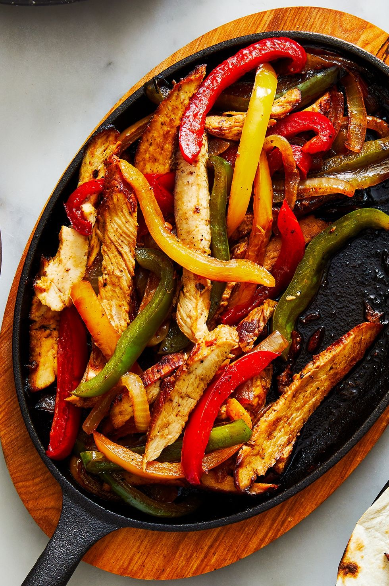

Chicken Fajita Recipe

Description
Delight in our sizzling chicken fajitas: tender strips of marinated chicken, vibrant peppers,
and onions, seasoned to perfection. Served with warm tortillas and fresh toppings, it's a
flavor-packed fiesta for any meal.
Ingredients
- 1/4 cup lime juice (from about 3 limes)
- 1/2 tsp. crushed red pepper flakes
- 1/4 cup plus 1 tbsp. neutral oil
- 2 tsp. ground cumin, divided
- 1 lb. boneless, skinless chicken breasts
- Kosher salt
- Freshly ground black pepper
- 2 bell peppers, seeds and ribs removed, thinly sliced
- 1 large yellow onion, thinly sliced
- Warmed flour tortillas and lime wedges, for serving
Steps
Step 1
- In a large bowl, whisk lime juice, red pepper, 1/4 cup oil, and 1 teaspoon cumin.
Season chicken with salt and black pepper, then add to bowl and toss to coat. Cover
and refrigerate for at least 30 minutes or up to 2 hours.
Step 2
- In a large skillet over medium heat, heat remaining 1 tablespoon oil. Add chicken and
cook until golden brown and cooked through and an instant-read thermometer inserted
into thickest part registers 160°, about 8 minutes per side. Transfer to a cutting board.
Let rest 10 minutes, then slice into strips.
Step 3
- Meanwhile, in same skillet over medium heat, combine peppers, onion, and remaining 1
teaspoon cumin; season with salt and black pepper. Cook, stirring occasionally, until
softened, about 7 minutes. Return chicken to skillet and toss until combined.
Step 4
- Transfer chicken mixture to a platter. Serve with tortillas and lime wedges alongside.